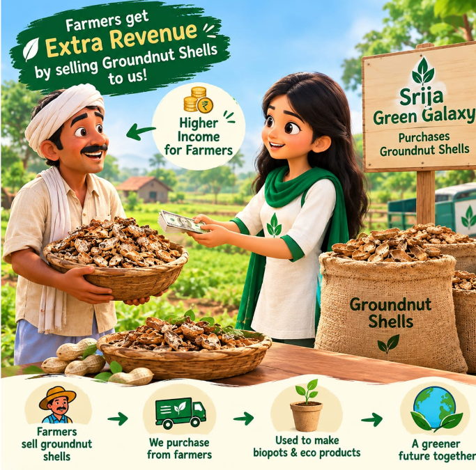
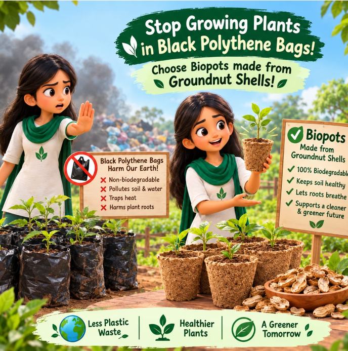
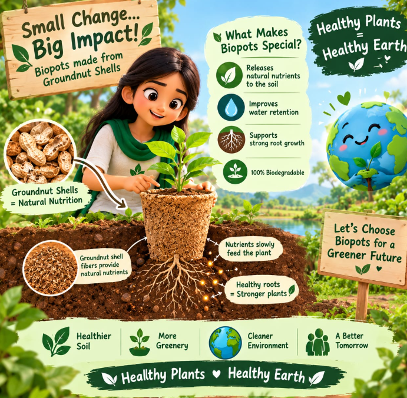
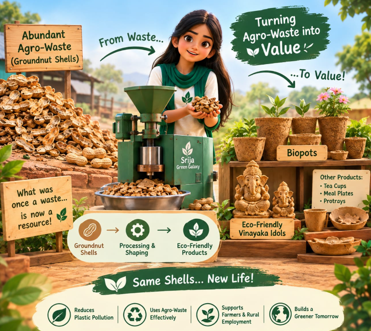
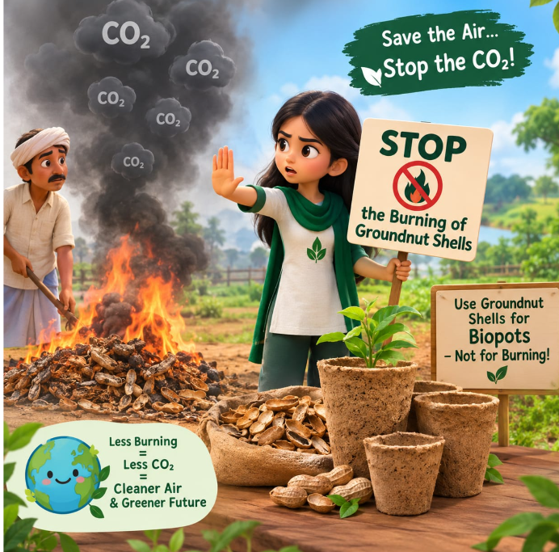
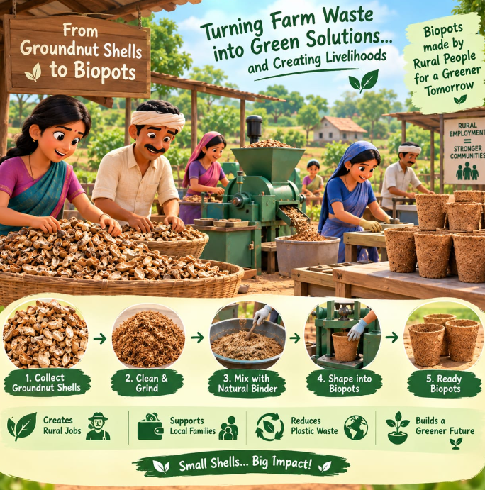

OUR IMPACT
Turning agricultural waste into useful, biodegradable products while creating environmental and social impact.
OUR JOURNEY
Srija Green Galaxy is working to transform agricultural waste, especially groundnut shells, into sustainable products such as biodegradable Biopots.
Our innovation addresses plastic pollution and agricultural waste while creating opportunities for farmers and rural communities.






Manufactured and supplied
Single-use plastic reduction
Customers served till date
Employment opportunities created
ENVIRONMENTAL IMPACT
Our Biopots provide an alternative to single-use plastic nursery bags by using agricultural waste as a raw material.
SOCIAL & RURAL IMPACT
Groundnut shells that were previously treated as agricultural waste can become a valuable raw material for sustainable products.
Our initiative aims to create additional income opportunities for farmers and employment opportunities in rural communities.
Explore our sustainable journey and discover how agricultural waste can create new possibilities.
Connect With Us